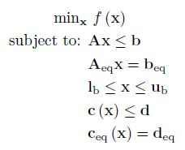
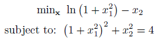
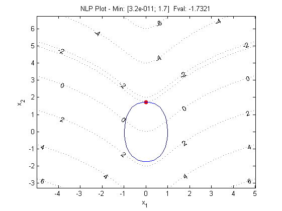

Nonlinear Program (NLP)
Introduction
A nonlinear program has the following form:

Where f is a function containing the nonlinear objective function, which is subject to the following constraints:
Linear Inequalities*
A is a m x n
sparse matrix, b is a m x 1 vector
Linear Equalities*
Aeq is a k x n sparse matrix, beq
is a k x 1 vector
Decision Variable Bounds
lb and ub are n x 1 vectors,
where -inf or inf indicate an unbounded lower or upper bound, respectively
Nonlinear Inequalities*
c is a m x 1 vector of functions containing nonlinear
inequality constraints, d is a m x 1 vector
Nonlinear Equalities*
ceq is a k x 1 vector of functions
containing nonlinear equality constraints, deq
is a k x 1 vector
The goal is to minimize the objective function by selecting a value of x that also satisfies all constraints.
*Your problem description will either use Linear / Nonlinear Inequalties and Linear Equalities OR Linear / Nonlinear Row Constraints. See the constraint information page.
Example Problem

The above problem contains both a nonlinear objective function and a nonlinear equality constraint. These should be written as Matlab functions or anonymous functions:
% Objective Function
obj = @(x) log(1 + x(1)^2) - x(2);
% Constraints
nlcon = @(x) (1 + x(1)^2)^2 + x(2)^2;
nlrhs = 4;
nle = 0; %Constraint Type: -1 <=, 0 ==, 1 >=
This can be solved using the OPTI Toolbox as follows:
% Build OPTI Problem
Opt = opti('obj',obj,'nlmix',nlcon,nlrhs,nle,'ndec',2)
% Solve
x0 = [2;2];
x = solve(Opt,x0)
And the solution is:
x =
0.0000
1.7321
To better visualize the solution, this can be plotted as follows:
plot(Opt)

As with UNO problems, if the constructor cannot determine the number decision variables in your problem (for example all arguments are nonlinear functions), then you must supply this explicitly to optiprob.
Solving NLPs is considerably more difficult than linear or quadratic problems and you will find experimenting with different solvers and settings may improve performance, improve accuracy or both. For example have a look at optiset and if using IPOPT, ipoptset for options available for tuning, or the appropriate set method for your solver of choice. As general a rule of thumb the more information you provide the solver, the better performance and accuracy you can expect. This can include providing exact first and second derivatives, setting flags to indicate linear or quadratic functions, or even experimenting with global solvers to see if you are getting stuck in a local minimum.
Copyright © 2011-2013 Jonathan Currie (I2C2)